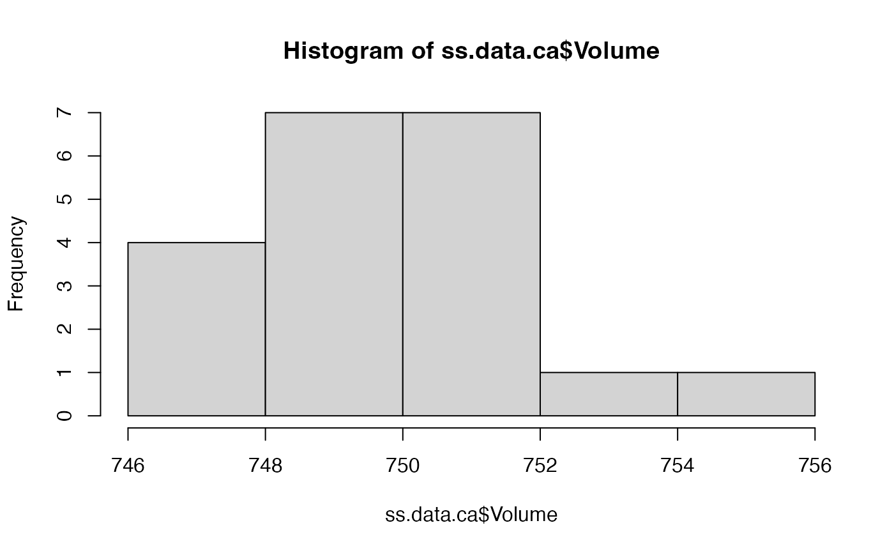

The only field of the data is the volume measured in 20 bottles.
data(ss.data.ca)
A data frame with 20 observations on the following variable.
Volumea numeric vector (volume in cl
See references.
This data set is used in chapter 7 of the book ``Six Sigma with R'' (see References).
Cano, Emilio L., Moguerza, Javier M. and Redchuk, Andrés. 2012.
Six Sigma with R. Statistical Engineering for Process
Improvement, Use R!, vol. 36. Springer, New York.
https://www.springer.com/gp/book/9781461436515.
#> Volume #> Min. :746.8 #> 1st Qu.:748.3 #> Median :749.5 #> Mean :749.8 #> 3rd Qu.:750.5 #> Max. :755.8